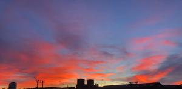
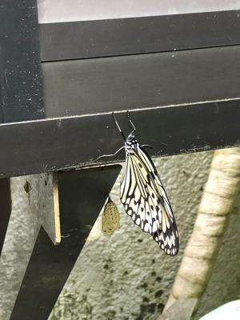

うるがいの話 ある日
最新: 平熱に戻る
うるがいとは 前提知識です
カニの画像をクリックすると『うるがいの話』サイトを表示します
うるがい(ｳﾙｶﾞｲ urugai)とは、『もずくがに』の名前でとても大きくなります。
たながー（ﾀﾅｶﾞｰtanagaa）とは手長えびのことで、何種類かあり大きいのは車 エビぐらいになります。
ぶながー(bunagaa)とは、赤い髪の毛、赤い身体、そして身長は１ｍ２０ｃｍ ぐらい、川の蟹を食べているの目撃された。場所は沖縄県国頭郡大宜味村のと ある村僕の隣近所に住んでいる爺さんから、聞いた話です。
2021年08月17日 (火）
平熱に戻る
16:35


７時頃熱を測ると３７度、微熱である。そして軽く眠る、１０時に平熱の３６
度５分に戻っていた。それと同時に倦怠感、関節痛などの症状も消えた。ホッ
とする。ちなみに一回目の接種の時に医者に熱が出る事があります、その時は
熱さましを飲んでくださいと言われたが、あとで、え！薬は自分で準備するの
かな？。今回は、２０１８年に貰った熱さましと、ヨメからもらった一錠（ヨ
メはヨメのお母さんが、行きつけの病院でワクチンを受けたとき、熱がでてき
た場合のため処方箋をして貰ったものを、ヨメが自分で使うために２錠分けて
いたもの、結局二人は使用しなかったが）で対応した。薬の準備は意識してい
なかった。
ヤフーの雨雲レーダーを拡大してみると、内地は北海道を除き殆どが雨雲を覆
われている。第１試合、グランドが大雨の中、試合をしていた。信じられない
光景だ、まるで泥まみれの中のサーカーの試合見たい、結局途中で中止になっ
たが。コロナ陽性で宮崎県の代表が辞退した、今後の天候も考えるとどこかの
タイミングで大会は中止なるのだろうな。